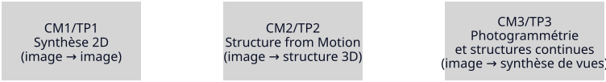
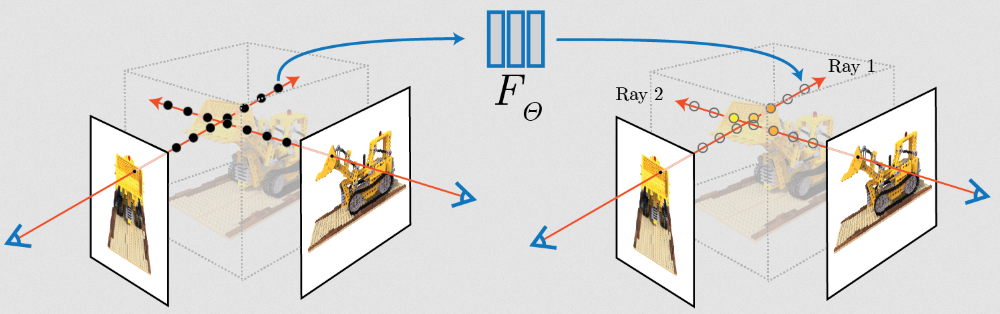

Synthèse d’Images par Rendu Inverse
CM3: Du discret au continu
Que peut-on faire avec cette géométrie ?
Aujourd’hui : discret continue synthèse d’images
Plan du cours
- Photogrammétrie : reconstruire une géométrie explicite (points, mesh)
- NeRF : modéliser la scène comme une fonction continue implicite
- Gaussian Splatting : utiliser une représentation continue explicite
👉 Objectif : comprendre comment un ensemble d’images peut être transformé en une représentation permettant la synthèse de nouvelles vues.
Fil directeur (2D 3D continu)

N’oubliez pas de rendre votre numérisation publiée !
Rappel CM2

- caméras calibrées
- nuage de points épars
Mais…
est-ce déjà un modèle 3D exploitable ? Nop
Aujourd’hui
Comment passer d’une SfM à une représentation
qui permette une synthèse de nouvelles images ?
Bloc 1
Première approche
LA PHOTOGRAMMETRIE
- photo- : « lumière »
- gramma : « écrit, trace »
- métrie : « mesure »
Structure from Motion : pipeline
À partir d’un ensemble d’images, on estime simultanément :
- la structure 3D de la scène
- la pose des caméras

- détection de points caractéristiques
- appariement entre images
- estimation des poses caméra
- triangulation des points 3D
- bundle adjustment
Résultat : nuage de points sparse + caméras estimées
Bundle Adjustment : ce que ça fait
On ajuste simultanément :
- les poses des caméras
- les points 3D
pour minimiser l’erreur de reprojection.
👉 Photogrammétrie = optimisation : trouver la structure qui “rend” au mieux les images observées.
Ce qui est reconstruit… et ce qui ne l’est pas
Reconstruit :
- une structure (souvent un nuage de points)
- des poses caméra
- parfois des intrinsics (auto-calibration)
Pas reconstruit (dans ce cours) :
- matériaux / illumination / BRDF
- “vérité” géométrique parfaite partout
- zones jamais observées
Ambiguïtés fondamentales
Même avec une bonne reprojection, il reste :
- échelle (sans référence métrique)
- symétries / répétitions (texture ambiguë)
- zones peu observées (faible recouvrement)
👉 Une reconstruction photogrammétrique est une solution compatible, pas une vérité unique.
De la structure à la surface
Pipeline typique :
images
SfM
nuage de points sparse
densification (MVS)
nuage dense
reconstruction de surface
mesh
Nous l’avons vu
Nous allons le voir
Densification
Le nuage obtenu par SfM est :
- sparse
- basé uniquement sur des points caractéristiques
Mais la scène contient beaucoup plus d’information.
Objectif : reconstruire beaucoup plus de points 3D.
👉 étape appelée Multi-View Stereo (MVS).
Multi-View Stereo
On utilise :
- les caméras estimées
- les images
pour estimer la profondeur de nombreux pixels.
Principe :
- comparer plusieurs images
- vérifier la cohérence entre vues
- estimer une carte de profondeur (depth map)
👉 on obtient un nuage de points dense.
Nuage dense
Nuage dense
Résultat du MVS :
- des millions de points
- couverture beaucoup plus complète
- géométrie plus détaillée
Mais ce nuage reste :
- discret
- non connecté
- difficile à rendre directement
👉 il faut reconstruire une surface continue.
Reconstruction de surface
Objectif :
transformer un nuage de points en surface continue.
Méthodes courantes :
- Delaunay triangulation (1934)
- Marching Cubes (Lorensen & Cline, 1987)
- Poisson Surface Reconstruction (Kazhdan et al., 2006)
Des méthodes solides… mais conçues pour reconstruire la géométrie, pas pour optimiser directement le rendu.
👉 on obtient un mesh.
Mesh
Mesh
Un mesh est une surface composée de :
- sommets
- arêtes
- faces (triangles)
Avantages :
- surface continue
- géométrie exploitable
- standard en CG
Mais la géométrie seule ne suffit pas pour un rendu réaliste.
Texture
Pour produire une apparence réaliste :
- on projette les images originales
- sur la surface reconstruite
Cela permet de reconstruire :
- couleurs
- détails visuels
- apparence globale
👉 résultat : modèle texturé.
Texture
Résultat final
Résultat final
Pipeline complet :
images
SfM
nuage sparse
densification (MVS)
nuage dense
reconstruction surface
mesh
texture
👉 un modèle 3D exploitable.
Les logiciels
- Meshroom
- Colmap
- RealityScan
- et quelques autres …
Colmap
x20
Meshroom
Problémes et limites
- trous
- aliasing
- pas optimisé
- textures moches
- géométrie bizarre voire inexacte
Mais tout ça n’est qu’une partie d’un pipeline pro
Mais tout ça n’est qu’une partie d’un pipeline pro
Une numérisation professionnelle (de haute qualité) coute chère :
- 200-1000€ pour un petit objet
- 1000-5000€ pour un objet complexe (e.g voiture, personne, statues)
- 2000-10000€ pour une scène / environnement / batiment (voiture, personne, plateau, décor
- 10k-50k+ € pour un gros projet
Le cout n’est PAS la capture
(ou l’utilisation de Meshroom)
MAIS
Le post-processing
- nettoyage du nuage
- reconstruction
- retopo / UV / textures
C’est là que part le temps humain donc l’argent.
Les logiciels ne sont qu’une partie du pipeline
Un modèle simplement reconstruit n’est pas prêt à être utilisé
À partir d’un modèle 3D brut :
il faut encore le transformer en asset exploitable :
👉 La reconstruction produit une base géométrique,
pas un résultat final.
Exemple
- Décimation : réduire la complexité du mesh
- Retopologie : organiser une géométrie propre
- Nettoyage : corriger artefacts, trous, défauts
- UV mapping : préparer le dépliage des textures
- Textures & maps : color, normal, roughness, AO…
- Relighting : adapter l’apparence à un contexte
https://panorama.ulb.ac.be/caracteristiques-bonnes-pratiques-photogrammetrie/
Pipeline pro
| Étape | Action clé |
|---|---|
| Prise de vue | Photos haute résolution en RAW + calibration |
| Pré-traitements | Correction lumière, couleur, optique |
| Photogrammétrie | Nuage de points → maillage → texture |
| Nettoyage | Suppression artefacts, trous, lissage |
| Optimisation | Décimation + retopologie |
| Textures / Shader | Création et projection des textures |
| UV Mapping | Organisation des textures |
| LOD | Niveaux de détails pour temps réel |
| Stockage | Archivage des données et versions |
🟢 acquisition 🔵 pipeline algorithmique 🔴 coût humain / production
Conclusion
Photogrammétrie ≠ asset final
👉 C’est une base de travail.
Respiration
BLOC 2
Mouais… on peut pas faire mieux ?
Plutôt que reconstruire la géométrie
pourrait on plutôt reconstruire directement
une représentation volumique continue de la scène ?
Voici
NERF
Euh… Wait…
Voici
NERF
Neural Radiance Field
- Neural : réseau de neurones (apprentissage)
- Radiance : lumière émise dans une direction
- Field : champ continu dans l’espace
Première approche d’une structure neurale (2020)
Idée centrale
Au lieu de reconstruire des points ou une surface
on apprend une fonction continue :
\[ F(x,y,z,\theta,\phi) \]
- \((x, y, z)\) : position dans l’espace 3D
- \((\theta, \phi)\) : direction d’observation
qui renvoie :
- couleur
- densité
Qu’est-ce que la densité ?
La densité (\(\sigma\)) indique :
combien il y a de “matière” à un point de l’espace
- densité faible espace vide
- densité forte surface / objet
👉 elle contrôle combien de lumière est absorbée ou émise
👉 La densité détermine où la surface “existe” dans l’espace
Schéma

Mécanisme
Pendant l’entraînement :
- on prend une image
- on lance des rayons
- on rend une image avec NeRF
- on compare à la vraie image
- on ajuste le réseau
👉 donc :
- si l’image est trop claire augmenter densité
- si l’image est mauvaise ajuster couleur/densité
L’entrainement ajuste la fonction \(F\) pour minimiser l’erreur.
Différence fondamentale
Photogrammétrie classique :
- on reconstruit une géométrie
- puis on rend
NeRF :
- on apprend directement une représentation volumique
👉 on optimise pour l’image finale, pas pour la géométrie.
Interprétation
On connaît :
- les images
- les caméras
Chaque point de l’espace contient :
- une densité
- une radiance
La scène devient un champ continu.
Un point n’a pas une couleur fixe.
Sa couleur dépend de la direction d’observation.
Comment ça marche ?
Entrainement
Pour chaque pixel :
- on lance un rayon à partir de la caméra
- on échantillonne des points le long du rayon
- chaque point est envoyé dans un réseau \(F_\theta\)
- le réseau prédit densité + couleur
👉 volume rendering
Inférence
Pour chaque pixel :
- on lance un rayon à partir de la caméra
- on échantillonne plusieurs points
- chaque point est évalué par \(F_\theta\)
- on accumule les contributions
👉 Résultat : une couleur de pixel

Volume rendering : intuition
Un rayon traverse la scène :
- chaque point contribue à la lumière
- selon sa densité
- et sa couleur
👉 on accumule ces contributions le long du rayon.
Pourquoi ça marche si bien ?
- continuité spatiale pas de trous / pas d’aliasing
- cohérence multi-vues une seule scène explique toutes les images
- dépendance à la vue effets non-lambertien capturés
👉 un rendu continu, stable et très réaliste
Conséquences :
- spécularités naturellement reproduites
- transparence et effets volumétriques possibles
Différence fondamentale :
SfM géométrie explicite (points / mesh)
NeRF géométrie implicite (densité qui émerge)
Bon ok mais ça donne quoi ?
Limites de NeRF
- difficile à éditer (modèle implicite)
- entraînement lourd
- rendu coûteux (ray marching)
- pipeline plus complexe pour temps réel que rasterisation
- pas directement compatible avec un pipeline GPU classique
👉 pas (encore) adapté à un usage temps réel simple
Pour résumer
On ne reconstruit plus un objet,
on apprend une fonction
qui représente le champ radiatif volumique
Pause
BLOC 3
Très bien… mais peut-on rendre cela plus contrôlable ?
Troisième approche
Gaussian Splatting
- Gaussian : distribution en cloche (incertitude, diffusion)
- Splatting : projeter / étaler un point sur l’image
GS pour les intimes
En gros
On garde le réalisme de NeRF
mais on évite le ray marching
Donne une scène éditable et manipulable !
Mais sous le capot, cependant, tout change !
Sous le capot, tout change !
- plus de fonction implicite
- mais un ensemble de primitives optimisées

Pas une méthode neuronale au sens strict,
mais une optimisation inspirée
des méthodes neurales
Ce que ça donne
Parallèle
Avant les réseaux de neurones,
les peintres faisaient déjà de la compression de la réalité.
Plutôt que représenter précisément les objets, ils capturaient des impressions visuelles.
Le Gaussian Splatting,
c’est un peu de l’impressionnisme en 3D.
Pointillisme
Impressionnisme
Idée centrale
Au lieu d’apprendre une fonction continue :
NeRF \(F(x,y,z,\theta,\phi)\)
On représente la scène comme :
un ensemble de gaussiennes 3D
Chaque gaussienne = une petite “tache” dans l’espace
Gaussienne 1D
Gaussienne 2D
Une gaussienne 3D
Chaque élément contient :
- une position (x, y, z)
- une taille / forme (covariance)
- une couleur
- une opacité
👉 une primitive directement adaptée au rendu
Intuition
Au lieu de :
- points (trop discrets)
- mesh (géométrie explicite mais discrète)
- fonction (NeRF)
On utilise des “bulles floues” dans l’espace
👉 qui se projettent directement à l’écran
Rendu (splatting)
Pour chaque gaussienne :
- on la projette dans l’image
- elle devient une ellipse
- elle contribue à la couleur du pixel
On accumule toutes les contributions.
pas de ray marching
ni de fonctions continues lourdes
Apprentissage
Comme NeRF :
- on part des images + caméras
On optimise :
- position des gaussiennes
- taille
- couleur
- opacité
👉 pour reproduire les images
Résultat
Une scène photoréaliste
prête à être rendue en temps réel
- stable
- dense
- qui permet transparence
- simulant de la réflectivité
Pipeline GPU - comparaison
Rasterisation classique
- vertex shader transformation
- assemblage triangles
- rasterisation fragments
- fragment shader couleur
Gaussian Splatting
- données gaussiennes 3D
- projection caméra ellipses écran
- tri (depth sorting) ordre back-to-front
- rasterisation splats (pas triangles)
- accumulation blending pondéré
Pipeline GS en pratique
- envoyer les gaussiennes au GPU (buffers)
- transformer (world caméra écran)
- approximer chaque gaussienne par une ellipse écran
- rasteriser en billboard / quad orienté
- accumuler via alpha blending ordonné
Différences fondamentales
- pas de mesh pas de connectivité
- pas de surface explicite
- pas de z-buffer classique
Finalement un GS est juste un nuage de points augmenté
Structure des données
Chaque gaussienne :
- position \((x,y,z)\)
- covariance \(\Sigma\) forme + orientation
- couleur (RGB)
- opacité (alpha)
Stockage :
.ply(points enrichis)- buffers GPU (SSBO / VBO)
Implémentation shader
- vertex shader projette la gaussienne
- geometry / compute génère l’ellipse écran
- fragment shader évalue la gaussienne
- blending accumulation
Limites
- moins interprétable qu’un mesh
- difficile à éditer
- dépend des données
👉 compromis entre NeRF et géométrie classique
Est-ce la représentation ultime ?
Oui pour l’instant mais manque une structure explicite
NeRF apprend comment la lumière traverse la scène.
Gaussian Splatting apprend directement
comment l’image doit apparaître.
Comment passer d’un nuage de points épars à un
mesh texturé?